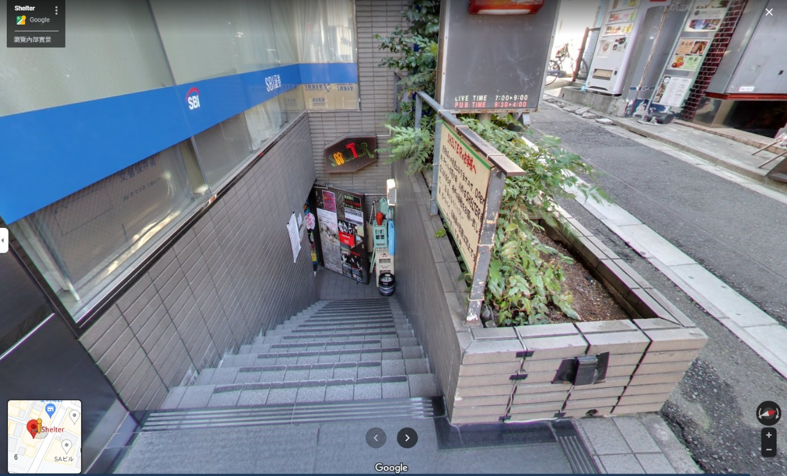
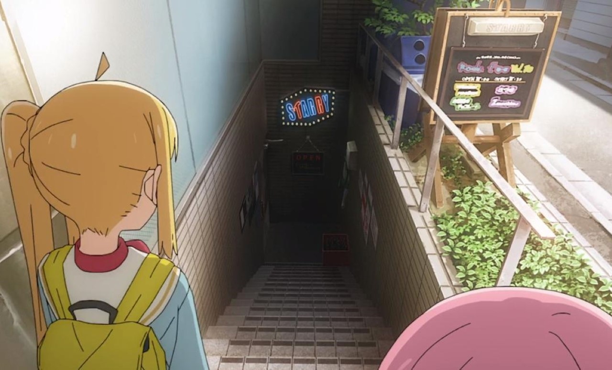
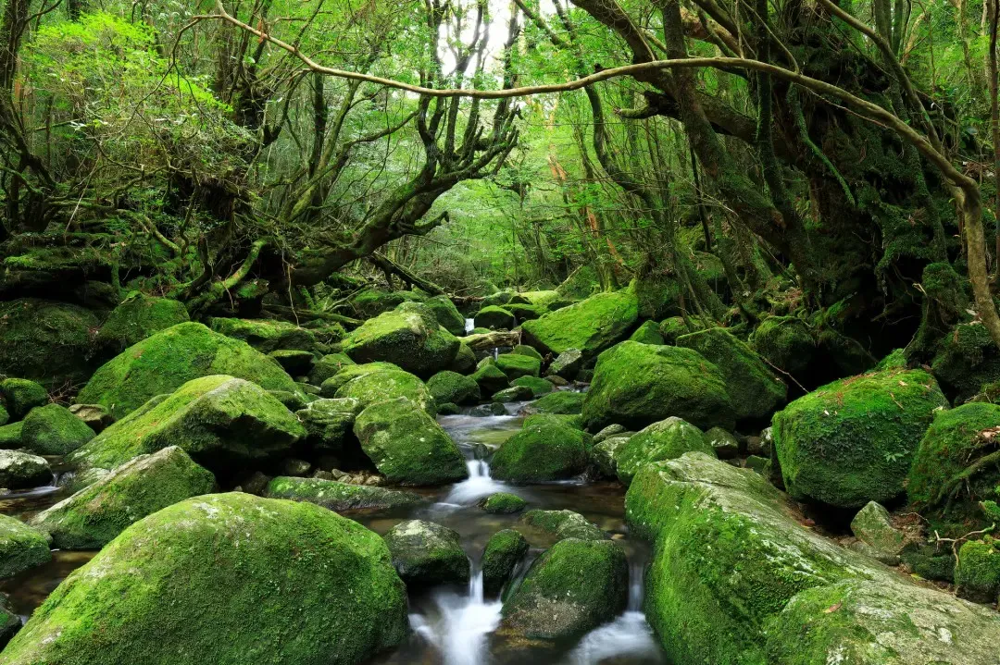
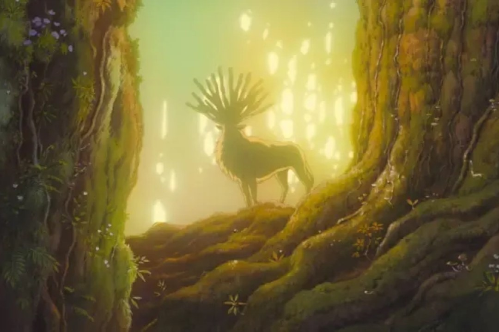
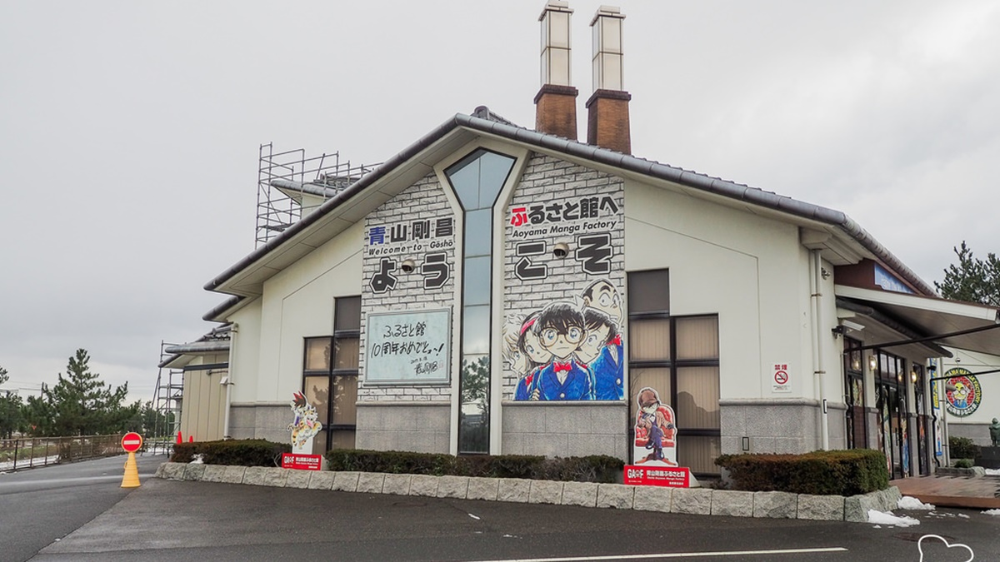
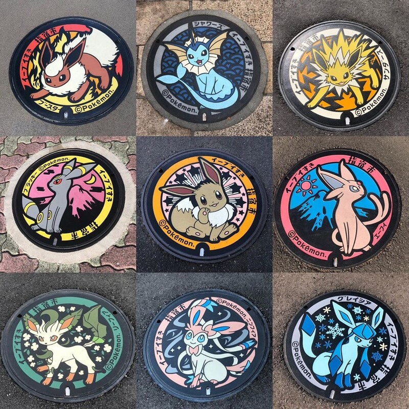
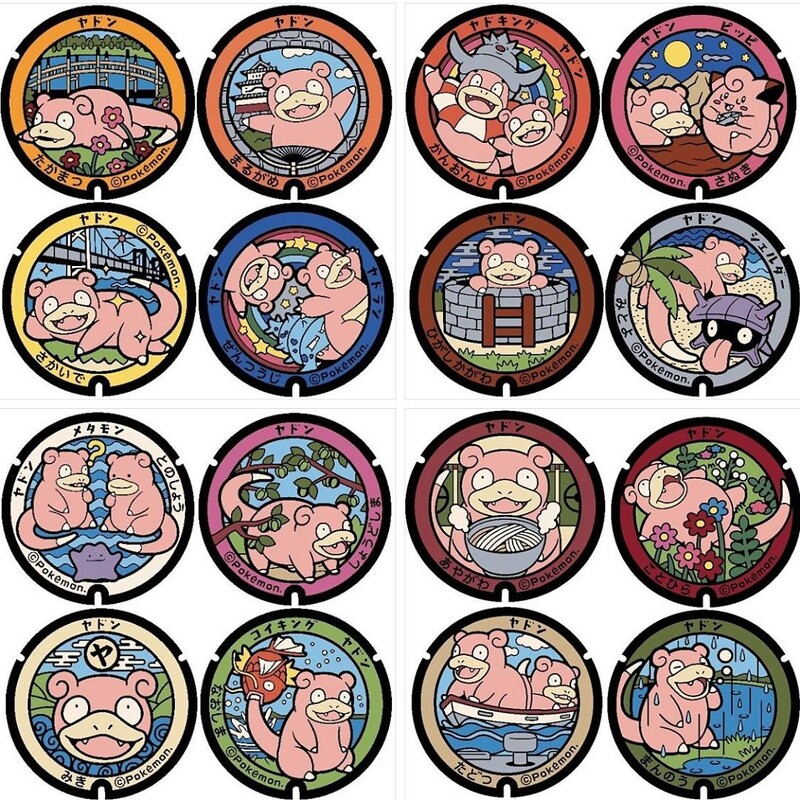
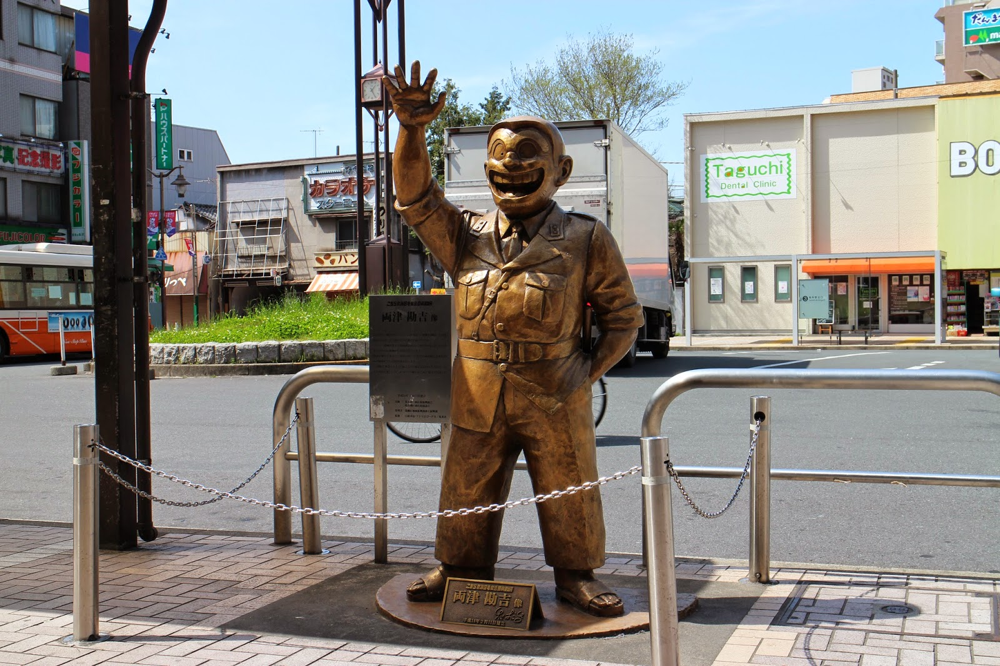
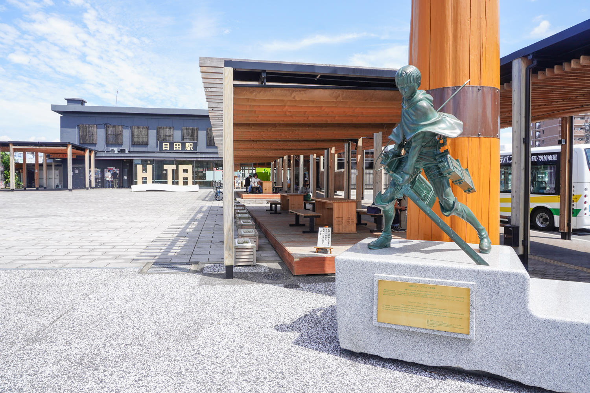
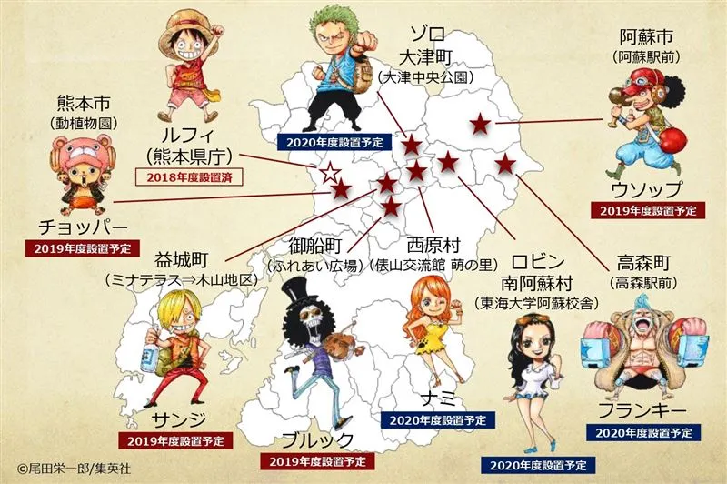

靈感來自生活
動畫不只是虛構的想像，許多作品其實來自現實的靈感。像是街道、學校、神社等真實場景，常常被動畫精細還原，讓觀眾感到熟悉又感動。 這些畫面不只讓故事更真實，也讓粉絲能走進動畫的世界，親身體驗故事發生的地方。
1. 聖地巡禮文化
「聖地巡禮」是指動畫、漫畫或遊戲的粉絲，前往作品中出現的現實地點進行朝聖式的旅行。這種文化源自日本，隨著動畫全球化，也逐漸在世界各地的粉絲之間流行起來。
這些「聖地」通常是動畫中重要場景的原型地點，例如角色生活的城市、學校、神社或車站。粉絲會拍攝對比照、模仿角色動作，甚至在特定時間（如角色生日）前往朝聖，形成一種獨特的粉絲體驗。
除了情感上的連結，聖地巡禮也帶動了地方觀光與經濟發展。許多地方政府與商家會主動與動畫合作，推出導覽地圖、限定商品、角色立牌、甚至舉辦活動，讓粉絲在旅途中獲得更多互動與驚喜。
2. 為什麼動畫會取材現實
➢ 增加真實感與情感共鳴
動畫雖然是虛構的媒介，但當它描繪出觀眾熟悉的現實場景時，能讓人更容易投入情節。例如，一個角色在東京新宿街頭奔跑，或是在京都的神社祈願，這些具體的地點會讓觀眾產生「我也去過那裡」的共鳴感。這種真實感不僅讓故事更可信，也能強化角色的情感表現，讓觀眾更容易產生情緒連結。


圖為《孤獨搖滾》在下北澤進行樂團表演的地方
➢ 節省設計時間與成本
動畫製作是一個高成本、高工時的過程。若能以現實場景為基礎，製作團隊就能省下大量的場景設計時間。透過實地取材（如拍照、錄影）或使用 Google 街景等工具，背景美術可以更快速地完成細緻的場景繪製。此外，真實場景本身就具備豐富的細節與氛圍，能減少創作上的不確定性與反覆修改的成本。


圖為《魔法公主》劇中山獸神森林的原型
➢ 吸引觀眾進行「聖地巡禮」
當動畫中的場景來自現實地點，粉絲就有機會親自前往這些地方，實地感受動畫的氛圍。這種「聖地巡禮」不僅是一種粉絲文化，也成為地方觀光的重要資源。許多地方政府甚至會與動畫合作，推出地圖、導覽牌、限定商品等，吸引粉絲造訪。這種互動讓動畫不只是螢幕上的娛樂，更成為現實生活中的體驗與記憶。
3. 動畫中的真實場景
➢ 你的名字
《你的名字》講述了高中男生立花瀧與素未謀面的高中女生宮水三葉意外地互換身分，從此展開奇妙又浪漫的故事。電影取景地方遍佈了岐阜縣與東京，而故事裡的虛構城鎮「糸守町」則被認為是在長野縣取景。
➢ 灌籃高手
《灌籃高手》講述不良少年「櫻木花道」為了追求心儀的女孩「赤木晴子」，誤打誤撞加入湘北高中籃球隊，從一個籃球門外漢逐漸成長為球隊主力，與隊友們一起挑戰全國大賽的熱血青春故事。
➢ 鈴芽之旅
《鈴芽之旅》講述居住在九州鄉鎮的17歲少女岩戶鈴芽，偶然遇上了為尋找並關閉「災難之門」而踏上旅途的「關門師」宗像草太。鈴芽追隨著草太，發現了山中廢墟裡的一扇老舊古門，其後與草太展開了一段關閉日本各地災難之門的冒險旅程。
從作品到地標
1. 動畫帶動地方觀光與經濟
➢觀光人潮增加：粉絲會前往動畫場景原型地點拍照、打卡，甚至模仿角色行動，形成「朝聖式旅遊」。
➢地方合作與行銷：地方政府與商家會推出動畫主題地圖、角色立牌、合作商品、限定活動等，吸引更多人潮。
➢文化節與活動：如角色生日慶典、聲優見面會、主題展覽等，進一步延長觀光熱潮。
2. 作者與作品的文化影響力
➢ 紀念館與博物館
設立以作者或作品為主題的展館，展示原稿、手稿、動畫製作過程等。
青山剛昌故鄉館
以漫畫家青山剛昌為主題的動漫博物館，館內展示青山岡昌的手稿、成長經歷、及作品相關介紹。由於青山剛昌的代表作為《名偵探柯南》，因此也被稱為「柯南博物館」。

➢ 街道佈置
以角色命名的街道、車站裝飾、雕像等，讓城市空間與作品融合。

圖為九州沖繩地區限定伊布

圖為九州沖繩地區限定伊布
圖為中國四國地區限定呆呆獸
3. 動畫角色銅像與地標
➢ 名偵探柯南
《名偵探柯南》描述高中生偵探工藤新一被黑暗組織灌下神秘藥物導致自己縮小後，試圖調查該組織以及破獲其他各種案件找出讓自己能夠恢復原狀的解藥的故事。
➢ 烏龍派出所
《烏龍派出所》是一部描述在龜有公園前派出所的警察兩津勘吉與他身邊的人、事、物的作品。身為已連載40年的超長壽漫畫，《烏龍派出所》的故事風格也經歷過多次改變。
兩津勘吉銅像
出了龜有車站後就會看到「烏龍派出所」的主角‧兩津勘吉銅像熱情地迎接，原作的人情味本色洋溢，好像在對你說著「歡迎光臨！」。

➢ 進擊的巨人
《進擊的巨人》描繪的是一個為了躲避巨人的威脅而將生活區域全部用堅固的城牆圍合起來的世界。
利威爾兵長銅像
調查軍團兵長，同時是軍團特別作戰小組班長。身材不高卻擁有「人類最強的士兵」之稱號，有傳言他一個人的戰鬥力相當於一個旅（約400人）。

➢ ONE PIECE
《航海王》以虛構的「大海賊時代」為故事舞台，描述海賊蒙其·D·魯夫想要得到「ONE PIECE」和成為「海賊王」為夢想而出海向「偉大的航道」航行的海洋冒險故事。
2016年熊本大地震時，身為熊本人的《航海王》作者尾田榮一郎老師不僅捐贈了八億日圓協助重建當地，還推出了不少觀光合作項目，最吸引海賊迷的就是散落在熊本各地的草帽海賊團夥伴們銅像。
